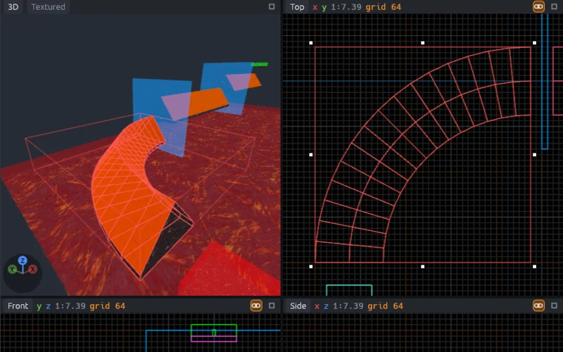
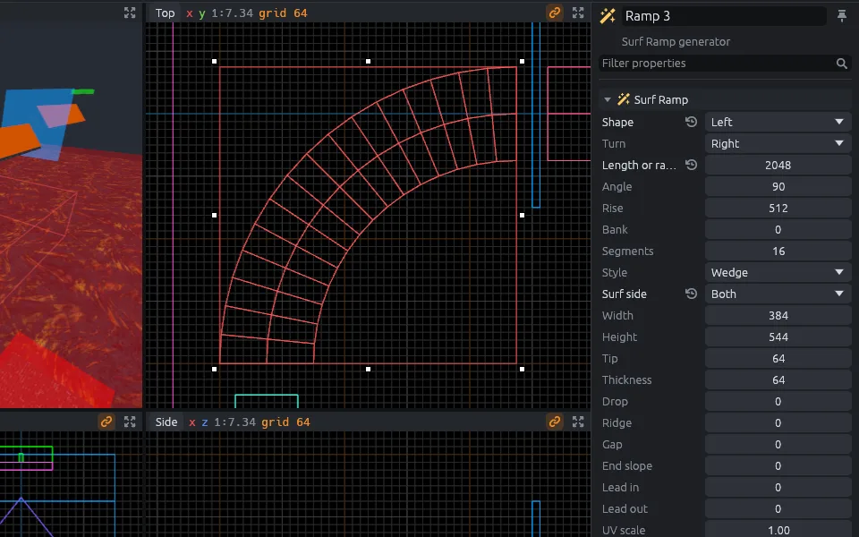
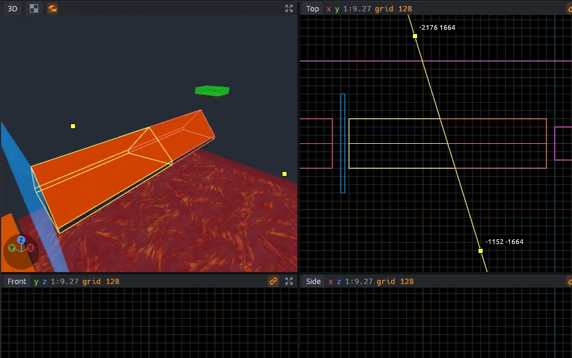
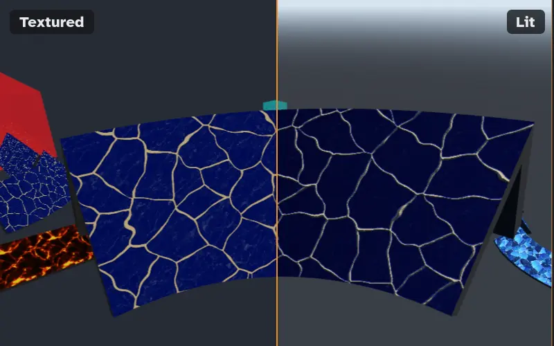
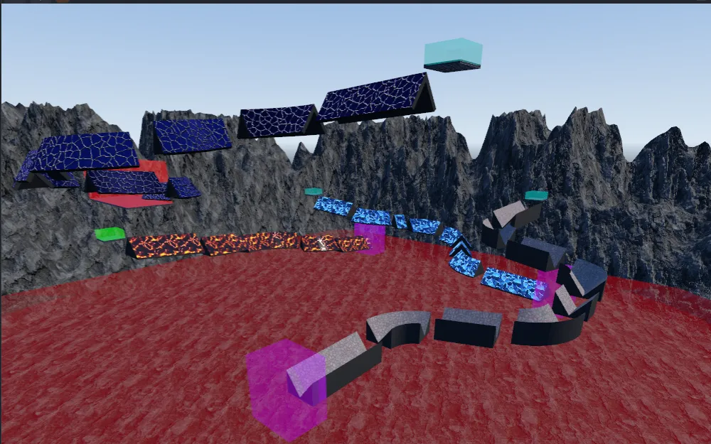
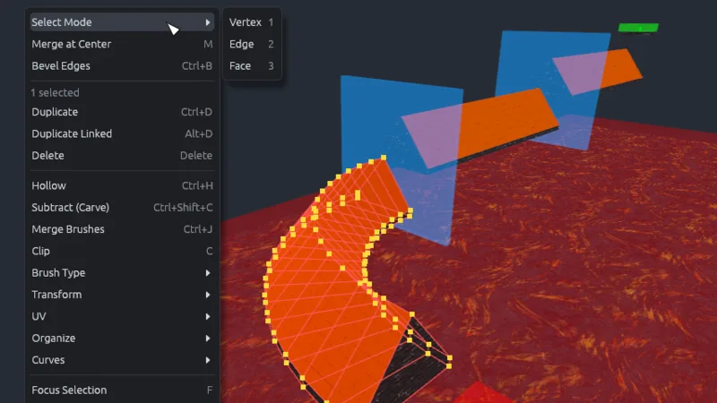
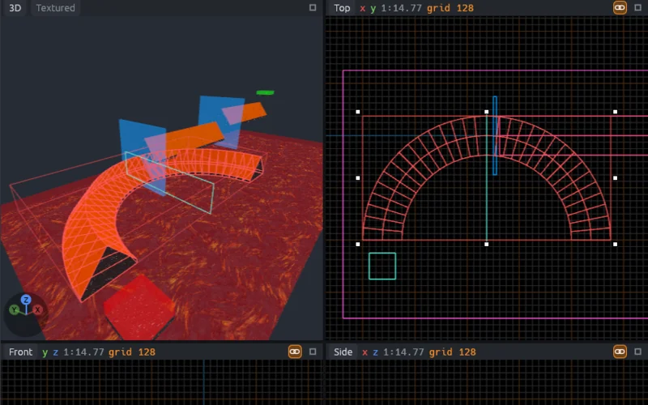
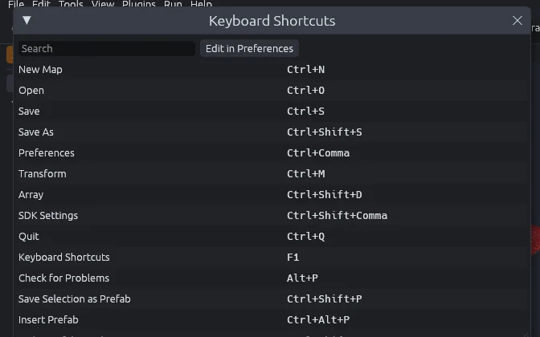
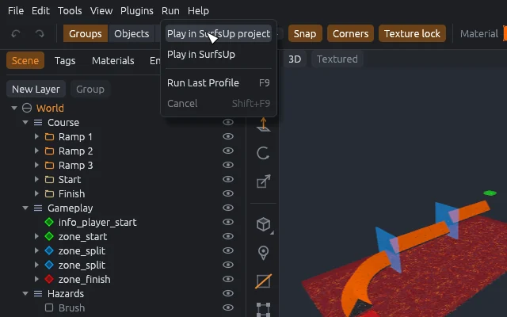

MapCraft
A level editor for brush-based maps in the style of Hammer and TrenchBroom, with a Godot-style scene tree. It comes with SDKs for SurfsUp, Counter-Strike: Source and Quake.

Features
-

Four views and a scene tree
Top, front, side and 3D views, laid out as in Hammer.
-

Surf ramp generator
Ramps keep their settings and rebuild when you change them.
-

Brush tools
Clip, carve, hollow, merge and extrude, with a preview.
-

Lit preview
PBR materials under the map's sky, sun and lights.
-

Terrain
Sculpt displacements, or load a heightmap.
-

Vertex, UV and curve tools
Bevels, a UV editor and Bezier paths, modeled on Blender.
-

Mirrors and prefabs
Mirror groups, linked copies and prefabs stay in sync.
-

Keyboard presets
Hammer and TrenchBroom key layouts, or your own.
-

SDKs and plugins
Each game is an SDK; Run compiles for CS:S or starts SurfsUp.
Your first map
Step by step guideInstall
Unzip on Windows or macOS. On Linux, make the AppImage executable and run it.
Choose an SDK
File > New Map, then choose SurfsUp, Counter-Strike: Source or Quake.
Set your game folder
Choose it when SDK Settings asks.
Build and run
Press B to draw a block, add a spawn, then press Run.
Docs
Guide
How to make maps.
Technical optional
Building, plugins, SDKs and file formats.